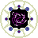
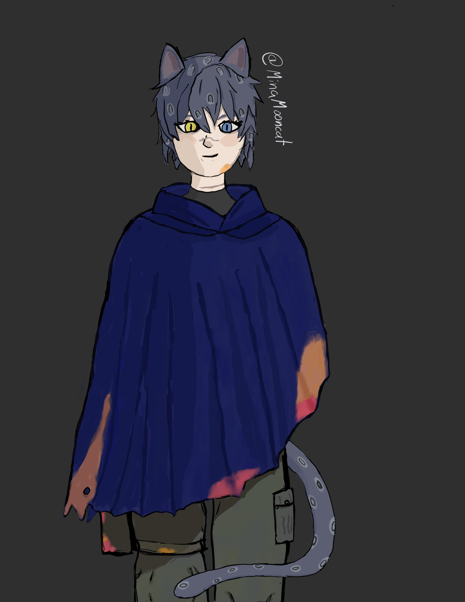

About Me
Hi, my name is Mina Böttcher, also known as MinaMooncat. I’m a creative developer passionate about art, interactive media, games, and storytelling. My hobbies also include TTRPGs. I started playing "One-Shots" in different systems at a club at my University in early 2025. Now I am writing One-Shots myself and GM them, as well as being part of two long term campaigns.
I am Currently studying "Games and Immersive Media" at HS-Furtwangen also, known as the "Blackforest University". My course of study teaches a lot of different basics used to produce games and interactive media. This includes but is not limited to game design, 2D and 3D art and its animation, sound design and coding. Currently I am focusing on concept art and 2D character design (both visually and narratively), but I am also exploring and improving other areas of interest such as coding, game- and narrative- design.
I was able to showcase my work, "Those Who Remained", at Gamescom 2025 as part of the RawTalentBooth! Now in 2026, I was not only part of showcasing "Hush Darling", but I am also happy to announce that I contributed to the RawTalentBooth as colead of the "graphics force". My tasks as colead include the overseeing of the graphics team, as well as the management and communication between the graphics team and the other teams of the RawTalentBooth. This position also enables me to take part as the graphics force lead in next years Gamescom, making me responsible for the management of the graphics part for the booth as well as taking notes on the process and teaching the colead for the following year.
Contact
You can reach me via:
Projects
Art
A variety of game Assets and other 2D art pieces I created during my studies and personal projects.
Some assets, especially those for "Primordial Mass", are made in a pixelart style.



You can find more of my Art at:
artstation.com/minamooncat